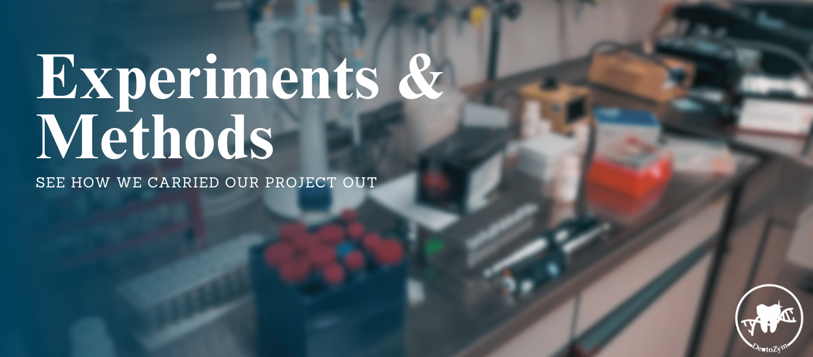

| Components | Volume | Concentration |
|---|---|---|
| Q5 2x Master Mix | 25 µl | - |
| 10 µM Primer fw | 2.5 µl | 0.5 µM |
| 10 µM Primer rv | 2.5 µl | 0.5 µM |
| ddH2O | 19 µl | - |
| DNA Template | 1 µl | - |
Set up the PCR machine with the following cycling conditions listed in Table 2.
| Step | Temp for Fragment | Time for Fragment | Temp for Vector | Time for Vector |
|---|---|---|---|---|
| Initial Denaturation | 98°C | 30 s | 98°C | 30 s |
| Cycle: Denaturation | 98°C | 10 s | 98°C | 10 s |
| Cycle: Annealing | 70°C | 30 s | 70°C | 30 s |
| Cycle: Elongation | 72°C | 90 s | 72°C | 180 s |
| Final Extension | 70°C | 150 s | 70°C | 210 s |
| Hold | 8°C | - | 8°C | - |
Run the PCR program for the specified number of cycles, 30 times for the fragments and 40 times for the vector.
Analyze the PCR products by running a portion of the reaction on an agarose gel for size comparison.
1. Heat in microwave until the agarose is completely dissolved.
-Use 3,0 μl Midori-Green (Advance DNA stain) per 50 ml.
2. Allow to harden for 30 min.
For 1% Gel use 0,5g Agarose, etc.
For a larger gel-chamber and 0,8% gel: use 250 ml TAE-Puffer on 2 g Agarose
Prepare an overculture by incubating the bacterial culture in 10 mL of LB medium at the appropriate temperature and conditions until reaching the desired growth phase.
Grow Pichia pastoris cells in YPD (Yeast extract Peptone Dextrose) medium to mid-log phase (OD600 ≈ 0.6-1.0) by incubating at 30°C with shaking at 220 rpm.
The objective of this protocol is to quickly analyze Gibson-assembled plasmids.
| BSA [µg] | BSA Standard [µL] | H2O [µL] |
|---|---|---|
| 0 | 0 | 100 |
| 2 | 2 | 98 |
| 5 | 5 | 95 |
| 7 | 7 | 93 |
| 10 | 10 | 90 |
| 15 | 15 | 85 |
| 20 | 20 | 80 |
| 25 | 25 | 75 |